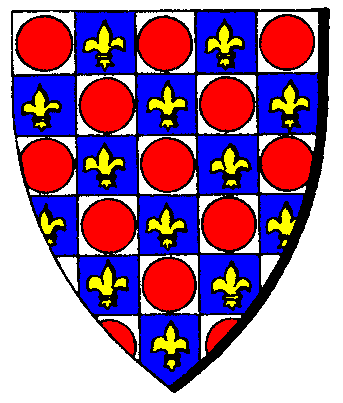

| Übersicht,
Newbies und Fragen |
|
Frage zu Tiere treiben Skill
|
| Iga Pelogran (RIP) |
Hallo,
ich war immer davon ausgegangen, dass Tiere treiben immer nur bis genau 10 über Basis skillt und es von +9.99 auf +10.00 auch recht lange dauert.
Nun sehe ich mir gerade die Skills meiner Leute an...
47.13 (37)
41.12 (31)
41.05 (31)
29.99 (20)
41.12 (31)
42.13 (32)
41.08 (31)
41.12 (31)
Bug oder gewollt?
Klärt mich auf. |
15.04.11 11:07

|
|
someone
 |
hab ich auch noch nie gesehn oder gehört...
genau wie du, war ich der meinung, dass bei einem überhangskill von 10 schluss ist.
evtl. hast du die basis gesenkt!?
oder aber zumindest schon seehr lange die gleiche basis.
wenn beides nicht zu trifft, bleibt wirklich nur bug oder gewollte änderung.. |
15.04.11 11:25
 |
|
| Eukal der Jeschmeidige (RIP) |
Ich hatte immer den Eindruck, dass es min. +10.00 ist, meistens ein klein wenig drüber. |
15.04.11 11:36
|
|
| Neilani (RIP) |
Bei mir ist es genau so, bin schon bei mehr als +10 über der Basis. |
15.04.11 11:37
|
|
Arthwr Dyddplentyn
 |
Normalfall = 10 über Basis...wegen letztem Serverausfall/kein Skillverfall sind die Werte leicht erhöht und pendeln sich langsam wieder ein.
Serverdown ist manchmal auch was Gutes*zwinker* |
15.04.11 11:56
|
|
Bongo Sensi
 |
normalfall wäre 10 über basis. mir ist aber vor ner weile auch aufgefallen, dass meine ganze lauftruppe fast auf 10.5 treiben war. ohne, dass ich etwas spezielles gemacht hätte.
momentan sind sie noch auf Tiere treiben: 10.13 (0)
denke nicht, dass das was mit skillverfall oder serverdown zu tun hat. normalerweise skillt sich der skill ja nur bis genau 10 über basis und hat da auch keinen verfall. |
15.04.11 13:17
|
|
Baldur McMulenberc
 |
"normalerweise skillt sich der skill ja nur bis genau 10 über basis und hat da auch keinen verfall."
Nene, der fällt jeden morgen zur Hauptauswertung und geht dann wieder nach oben, fällt die Hauptauswertung weg fällt der Skill nicht, und damit gehts dann über 10... |
15.04.11 13:20
|
|
someone
|
stimmt,
das macht sinn.
hab mal auch bei mir geschaut und auch einen mit 44.3(40) gefunden und die meisten mit +10,13 |
15.04.11 14:15
|
|
| Seancher (RIP) |
aber vielleicht wurde es umgestellt und wie zb beim ernten eingestellt wurde, dass man da ebend nicht nur +10 hat wenn man viel reist und die anpassung zur hauptrunde erfolgt |
15.04.11 17:51
|
|
someone
|
dann würde aber der skill jetzt nicht weiter sinken und wieder auf die +10 zurück gehen, oder?
muss mann mal beobachten! |
15.04.11 18:24
|
|
Arthwr Dyddplentyn
|
Muss man nicht,ist schon seit Jahren so Some*zwinker* |
16.04.11 8:07
|
|
Übersicht,
Newbies und Fragen
|